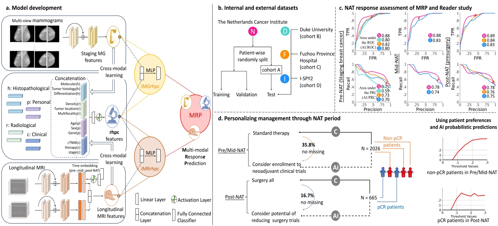

Breast cancer treatment is increasingly personalized, yet clinical decisions still rely heavily on snapshots such as tumor size changes and a limited set of clinical indicators. Our project is building a breast cancer digital twin—a patient-specific, continuously updated virtual counterpart of the real tumor and its surrounding microenvironment, designed to support key decisions throughout diagnosis, neoadjuvant therapy, and surgical planning.
Using routine clinical imaging as the foundation, the digital twin learns how an individual tumor behaves over time and how it responds to therapy. Instead of focusing only on the tumor itself, we aim to reflect the broader context in which the tumor evolves, including the surrounding tissue environment that is closely linked to invasion, metastasis, and treatment sensitivity. By integrating imaging evidence with clinical and pathological information, the twin provides a coherent, patient-level understanding of disease status and likely future trajectories, with the goal of making complex information more actionable for clinicians.

The digital twin is designed to deliver clinically meaningful predictions that align with everyday workflows. It estimates the likelihood of achieving a complete response after neoadjuvant therapy, anticipates how the tumor will shrink and what that implies for breast-conserving surgery, and supports risk stratification related to tumor aggressiveness and potential lymph node involvement. Beyond numeric outputs, it emphasizes interpretability through intuitive visual summaries so that radiologists and surgeons can understand why a prediction is made and how it connects to observed imaging patterns.
Ultimately, this project seeks to move from “measuring response” to “understanding response.” By providing an interpretable, patient-specific model that can be updated across timepoints, the breast cancer digital twin aims to enable earlier identification of non-responders, better tailoring of treatment intensity, and more confident surgical decision-making—supporting a future of precision care that is both data-driven and clinically trustworthy.